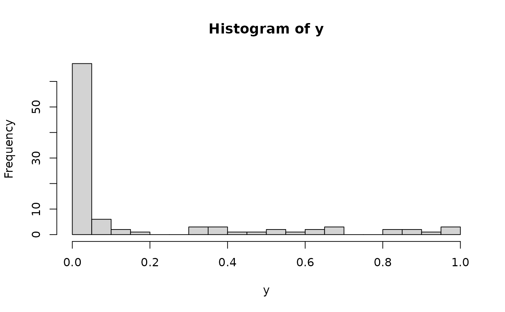

Model selection for semiparametric Bayesian linear regression
Source:R/experimental_funs.R
sblm_modelsel.RdCompute model probabilities for semiparametric Bayesian linear regression with 1) an unknown (nonparametric) transformation and 2) a sparsity prior on the regression coefficients. The model probabilities are computed using direct Monte Carlo (not MCMC) sampling.
Usage
sblm_modelsel(
y,
X,
prob_inclusion = 0.5,
psi = length(y),
fixedX = FALSE,
init_screen = NULL,
nsave = 1000,
override = FALSE,
ngrid = 100,
verbose = TRUE
)Arguments
- y
n x 1response vector- X
n x pmatrix of predictors (no intercept)- prob_inclusion
prior inclusion probability for each variable
- psi
prior variance (g-prior)
- fixedX
logical; if TRUE, treat the design as fixed (non-random) when sampling the transformation; otherwise treat covariates as random with an unknown distribution
- init_screen
for the initial approximation, number of covariates to pre-screen (necessary when
p > n); if NULL, use n/log(n)- nsave
number of Monte Carlo simulations
- override
logical; if TRUE, the user may override the default cancellation of the function call when
p > 15- ngrid
number of grid points for inverse approximations
- verbose
logical; if TRUE, print time remaining
Value
a list with the following elements:
post_probsthe posterior probabilities for each modelall_models:2^p x pmatrix where each row corresponds to a model frompost_probsand each column indicates inclusion (TRUE) or exclusion (FALSE) for that variablemodel: the model fit (here,sblm_modelsel)
as well as the arguments passed in.
Details
This function provides fully Bayesian model selection for a
transformed linear model with sparse g-priors on the regression coefficients.
The transformation is modeled as unknown and learned jointly
with the model probabilities. This model applies for real-valued data, positive data, and
compactly-supported data (the support is automatically deduced from the observed y values).
Enumeration of all possible subsets is computationally demanding and
should be reserved only for small p. The function will exit for
p > 15 unless an override command is given (override = TRUE).
This function exclusively computes model probabilities and does not
provide other coefficient inference or prediction. Doing so is straightforward,
but omitted here to save on compute time.
For prediction, coefficient inference, and computation
with moderate to large p, use sblm_ssvs.
Note
The location (intercept) and scale (sigma_epsilon) are
not identified, so any intercept in X will be removed.
The model-fitting *does* include an internal location-scale
adjustment, but the model probabilities only refer to the
non-intercept variables in X.
Examples
# \donttest{
# Simulate some data:
dat = simulate_tlm(n = 100, p = 5, g_type = 'beta')
y = dat$y; X = dat$X
hist(y, breaks = 25) # marginal distribution

# Package for conveniently computing all subsets:
library(plyr)
# Fit the semiparametric Bayesian linear model with model selection:
fit = sblm_modelsel(y = y, X = X)
#> [1] "10 seconds remaining"
#> [1] "Total time: 19 seconds"
names(fit) # what is returned
#> [1] "post_probs" "all_models" "model" "y" "X"
#> [6] "init_screen"
# Summarize the probabilities of each model (by size):
plot(rowSums(fit$all_models), fit$post_probs,
xlab = 'Model sizes', ylab = 'p(model | data)',
main = 'Posterior model probabilities', pch = 2, ylim = c(0,1))
# Highest probability model:
hpm = which.max(fit$post_probs)
fit$post_probs[hpm] # probability
#> [1] 0.9404899
which(fit$all_models[hpm,]) # which variables
#> X1 X2 X3
#> 1 2 3
which(dat$beta_true != 0) # ground truth
#> [1] 1 2 3
# }